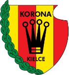

Najnowsze Informacje
KORONA KIELCE


Informacje o klubie:
- Miejski Klub Sportowy Korona Kielce
- Data założenia: 10 lipca 1973
- Adres: Ściegiennego 8, 25-033 Kielce
- Stadion: Stadion Miejski Arena Kielc - 15 550 miejsc
- Prezes: Krzysztof Zając (od 11 kwietnia 2017)
- Mirosław Smyła (od 16 września 2019)


Napastnicy
Pomocnicy
Obrońcy
Bramkarze
Fanatics Zone
ZGODY
Sandecja Nowy Sącz
KOSY
Wisła Kraków
Radomiak Radom
KSZO Ostrowiec Świętokrzyski
Motor Lublin
Stal Stalowa Wola
Spartak Trnava (układ)